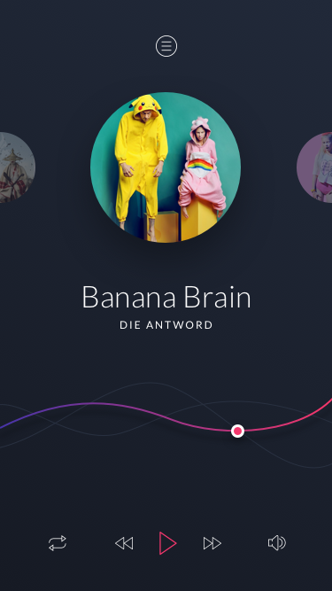

Latihan
Pada latihan kali ini silahkan anda belajar mengkonversi layout dengan desain dibawah ini

Untuk memulai latihan ini silahkan clone starter code pada repository berikut ini Starter Code Chapter 2 pada repository ini sudah disediakan file drawable dan font yang digunakan pada layout ini.